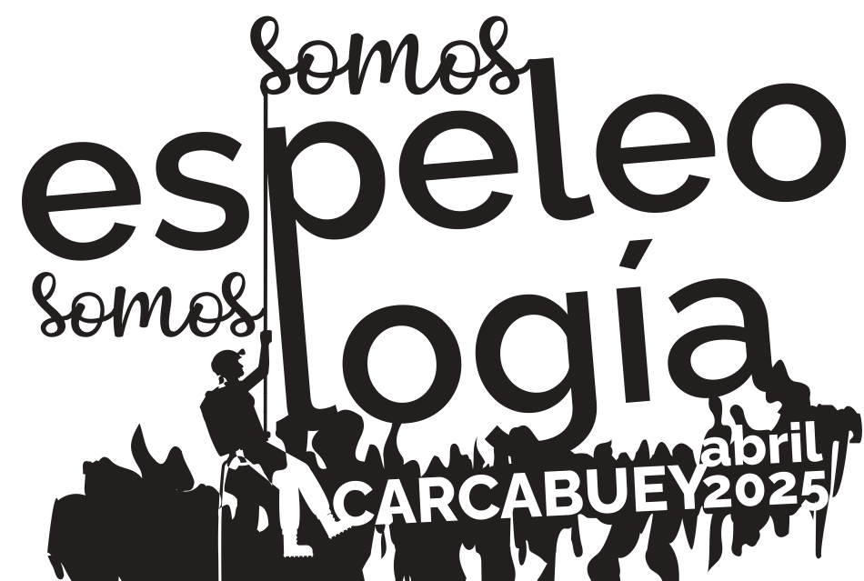

Jornadas de Espeleología de Córdoba 2025. Carcabuey

Inicio
Cavidades
Ponencias
Turismo
Concurso
Agradecimientos
Bienvenidos a las Jornadas de Espeleología
Del 4 al 6 de abril de 2025 en Carcabuey, Córdoba.
Inscribirse